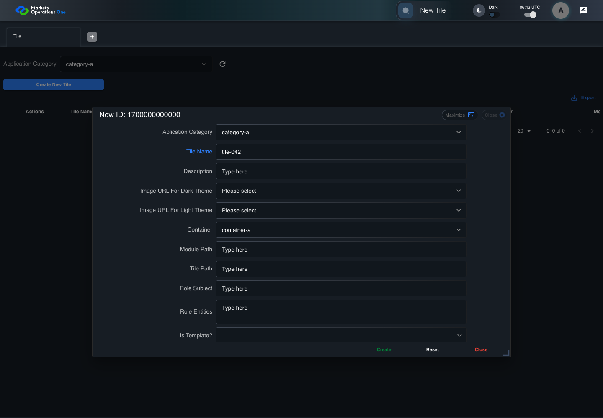
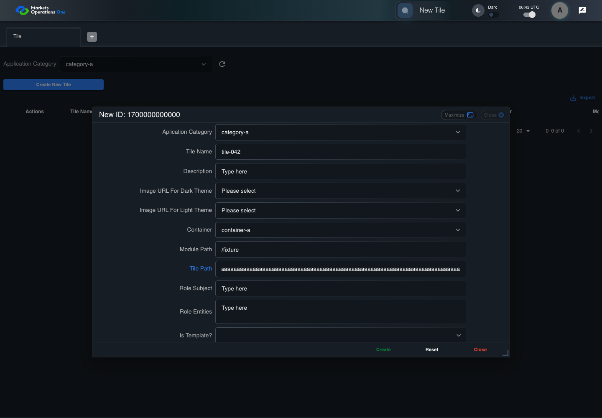
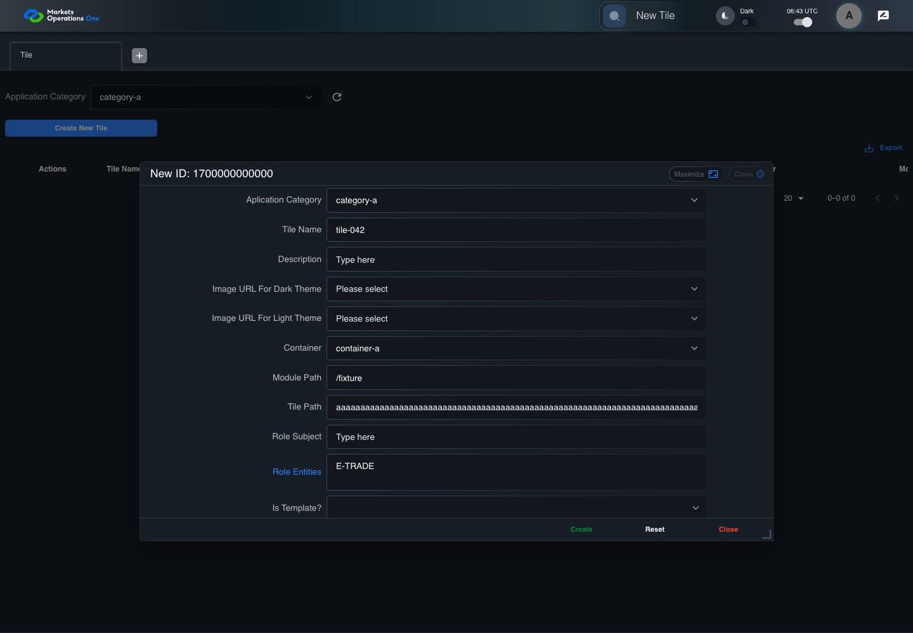
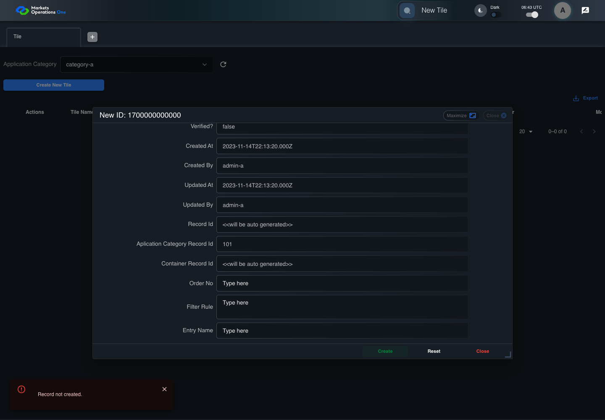

BFF-ADM-042 current BFF administration through actual UI
PASS · application/run-072/bff-adm-042-current-bff-administration-through-actual-ui-e7da50654662-attempt-1 · ACTUAL_APPLICATION_LOCAL_SERVICES
Actual current React and exact-current BFF admin controllers/services/JPA with actual migration DDL in disposable PostgreSQL. Controlled OUD/EMS2 identities and local Spring bootstrap. Fixture SQL seeds/mutates isolated records; service errors are actual database errors. Undefined agreed messages remain unresolved acceptance.
2026-10-22T06:43:07.012Z to 2026-10-22T06:43:14.900Z
Assertions and result · Artifact manifest · Exact run inputs and source hashes
Result SHA-256:696c17aa4b901f58af4dbe7b698d18c494d8b4a336538f01a2516653d3b2c06cMachine observations
- actual-identity-projection.json
079db6e5c72a6362ef611fb1f47afc0b5207bff3b7262aa1cdb0f21ac75c041e - actual-migration-schema.json
8178f96d231b86f894b6c1c61c419bef56a787a3dba551ce5d26079f3bb347eb - baseline-inputs.json
fb66950146f29ddc0d48aa04a54212e9b8b8c763ad22f7c2f6498bfb684052d6 - bff-boundary.json
bc1900ec5a7161d0966bdb0552cd2f3641acce6ab58a7804b9141737bdc82b41 - committed-ui-submission-comparisons.json
42e9e40cf2e01a8216e6fac7b268a65a3d97f7d6bf483054c5a3915c0df41d9e - creation-clock.json
8113c82a085c40fc6e0b3219a83d46b1877a0d5bedad8a9c121d0e229d1f7e00 - empty-filter-rule-representation.json
5de10c6e470b22e11ae3a4c92052fbf30783757c8508232cd45352b67cce864d - fixture-step-10.json
e4b064946085de5beafb0b8848e6336d1dc6ec6d8413767956f165b0ddc94187 - fixture-step-11.json
8770e4f3cbe9b3427ef3e29f9d4368e910ed3c35f00631ae908199d6831b7383 - fixture-step-6.json
001134fe8c22c7a7f216204c31f119be399ba656d65146cf972da694109233ee - fixture-step-7.json
d76b8feaa32a1b4db02a64586534ee09937b051194e7015e202b9d5e1dbd62b7 - fixture-step-8.json
325ae04c7f8d4b52bf2f1ae9e6c588c532eb03d873b158559e878c96bf79f440 - fixture-step-9.json
c6c10d527a0d9673cf0e53439cd043a0de53a81518c2b4b2ae2f7c70ed495a14 - initial-persisted-records.json
68ca5f2ab6f7117be4c54f297318e207a16b713b983bab2b2d7fa7cfa7709205 - persisted-after-submit.json
574819a95150a7aafd7c3a8da1978668b5606d7f8f747586e8f62372e55f4a9d - reference-snapshot-3.json
2a400e85d4b06111a1ba36bcb909c1b3ee017786201e89ef7e9f5ee57798cb71 - reference-snapshot-4.json
088ebda96727ef8fc825f171db3ac5569241bee51789a0bd08f35c2d17d95132 - ui-origin-bff-requests.json
9539718bad42a659d83674261fa5145673ab09fb4ac17b140419e14e7d5920d9
Screenshot capture: CAPTURED. Named frames: 25.
Step screenshot bindings: COMPLETE. 24/24 canonical steps have execution screenshots.
Bindings measure structural coverage only. They do not establish screenshot content quality or relevance.
Screenshot content review: NOT_REVIEWED. Recorded context: 0/25 frames. Identical image bytes: 0 repeated frames. Recorded context does not establish human visual review.
Canonical step timeline
Given Admin A uses subject "admin-a" with role "FMO_ADMIN" in an isolated authenticated browser
Execution: PASSED.
1. step-01 Visible state after step 1: Given Admin A uses subject "admin-a" with role "FMO_ADMIN" in an isolated authenticated browser
2026-10-22T06:43:09.815Z · 1440×1000
Step: /Users/lushevol/code/github/ratan-release-impact/workbench/tasks/ui-test-coverage-20261022/test-cases.md:16480
SHA-256:dfdc4d9f87a154c4ae46684579c40a6bd70acad870e9b4d0e2d80afa36fd4e6cAnd the controlled Tile fixture records the initial grid rows and persisted values
Execution: PASSED.
2. step-02 Visible state after step 2: And the controlled Tile fixture records the initial grid rows and persisted values
2026-10-22T06:43:09.963Z · 1440×1000
Step: /Users/lushevol/code/github/ratan-release-impact/workbench/tasks/ui-test-coverage-20261022/test-cases.md:16481
SHA-256:5fea6524825cb12fe898c7a82a100ec1bf216016ff848d7bbd02127981d9c5d7And Category 101 has label "category-a" and Import Map 201 has Module Name "container-a"
Execution: PASSED.
3. step-03 Visible state after step 3: And Category 101 has label "category-a" and Import Map 201 has Module Name "container-a"
2026-10-22T06:43:10.040Z · 1440×1000
Step: /Users/lushevol/code/github/ratan-release-impact/workbench/tasks/ui-test-coverage-20261022/test-cases.md:16482
SHA-256:feab2e28aaf87d2ba40315b11ddb560b8914f565bf5aabd61984e60e8224458aAnd both references belong to "FMO_ADMIN" and the Tile page category filter value is Category 101
Execution: PASSED.
4. step-04 Visible state after step 4: And both references belong to "FMO_ADMIN" and the Tile page category filter value is Category 101
2026-10-22T06:43:10.106Z · 1440×1000
Step: /Users/lushevol/code/github/ratan-release-impact/workbench/tasks/ui-test-coverage-20261022/test-cases.md:16483
SHA-256:175fe539e6185b8c5cdb73c65f80a1c70718919fe475aeba9f3c45c45bef3a95And the controlled creation clock returns 1700000000000 milliseconds
Execution: PASSED.
5. step-05 Visible state after step 5: And the controlled creation clock returns 1700000000000 milliseconds
2026-10-22T06:43:10.155Z · 1440×1000
Step: /Users/lushevol/code/github/ratan-release-impact/workbench/tasks/ui-test-coverage-20261022/test-cases.md:16484
SHA-256:7c9c17d649d7178d70791dad9956a9d37a861ca6d5b90fafb47659d2f38c9b2cAnd the baseline fixture data defines "Tile Name" as "tile-042"
Execution: PASSED.
6. step-06 Visible state after step 6: And the baseline fixture data defines "Tile Name" as "tile-042"
2026-10-22T06:43:10.208Z · 1440×1000
Step: /Users/lushevol/code/github/ratan-release-impact/workbench/tasks/ui-test-coverage-20261022/test-cases.md:16485
SHA-256:fcdf481d1e897dbdfd3114bceb58d9a63d7a467ecb9be62a989cffef4be10f30And the baseline fixture data defines "Module Path" as "/fixture"
Execution: PASSED.
7. step-07 Visible state after step 7: And the baseline fixture data defines "Module Path" as "/fixture"
2026-10-22T06:43:10.259Z · 1440×1000
Step: /Users/lushevol/code/github/ratan-release-impact/workbench/tasks/ui-test-coverage-20261022/test-cases.md:16486
SHA-256:b63bad2c3b152793bb52080c4d159f322c8e50f143b7c1c55ee21e79fdeca9cdAnd the baseline fixture data defines "Tile Path" as "/case-042"
Execution: PASSED.
8. step-08 Visible state after step 8: And the baseline fixture data defines "Tile Path" as "/case-042"
2026-10-22T06:43:10.303Z · 1440×1000
Step: /Users/lushevol/code/github/ratan-release-impact/workbench/tasks/ui-test-coverage-20261022/test-cases.md:16487
SHA-256:4df340404ed6f9092d29c9d6680437d2a054e04705263024b28a8bdac9c68485And the baseline fixture data defines "Role Entities" as "E-TRADE"
Execution: PASSED.
9. step-09 Visible state after step 9: And the baseline fixture data defines "Role Entities" as "E-TRADE"
2026-10-22T06:43:10.353Z · 1440×1000
Step: /Users/lushevol/code/github/ratan-release-impact/workbench/tasks/ui-test-coverage-20261022/test-cases.md:16488
SHA-256:89690475654f20f037d8fe3ace42553097d352cdc8c8aa4208528000315d498dAnd the baseline fixture data defines "Filter Rule" as ""
Execution: PASSED.
10. step-10 Visible state after step 10: And the baseline fixture data defines "Filter Rule" as ""
2026-10-22T06:43:10.403Z · 1440×1000
Step: /Users/lushevol/code/github/ratan-release-impact/workbench/tasks/ui-test-coverage-20261022/test-cases.md:16489
SHA-256:c715773ff3181223a90a92d361cb9618b0cb8ddc8b279cbee165844778f93be6And the baseline Tile references use "Aplication Category" "category-a" and "Container" "container-a"
Execution: PASSED.
11. step-11 Visible state after step 11: And the baseline Tile references use "Aplication Category" "category-a" and "Container" "container-a"
2026-10-22T06:43:10.453Z · 1440×1000
Step: /Users/lushevol/code/github/ratan-release-impact/workbench/tasks/ui-test-coverage-20261022/test-cases.md:16490
SHA-256:606003729659672aa6194f76fe854ec0e0b6a1f17ac031c6010572a6d4d13f1bAnd the prepared database uses the inspected migration DDL and reports its applied schema revision
Execution: PASSED.
12. step-12 Visible state after step 12: And the prepared database uses the inspected migration DDL and reports its applied schema revision
2026-10-22T06:43:10.503Z · 1440×1000
Step: /Users/lushevol/code/github/ratan-release-impact/workbench/tasks/ui-test-coverage-20261022/test-cases.md:16491
SHA-256:1f1a0ac93ee9716320442b4d00acd34466b550a1ae66fb853eaafb255936713fWhen Admin A clicks the button labeled "Create New Tile" on the Tile administration page
Execution: PASSED.
13. step-13 Visible state after step 13: When Admin A clicks the button labeled "Create New Tile" on the Tile administration page
2026-10-22T06:43:10.765Z · 1440×1000
Step: /Users/lushevol/code/github/ratan-release-impact/workbench/tasks/ui-test-coverage-20261022/test-cases.md:16492
SHA-256:7f97526681ad091d45b786c082a89f27080feb50a4f315810adffe7c3276826eThen the dialog titled "new ID: 1700000000000" is visible on the Tile administration page
Execution: PASSED.
14. step-14 Visible state after step 14: Then the dialog titled "new ID: 1700000000000" is visible on the Tile administration page
2026-10-22T06:43:10.845Z · 1440×1000
Step: /Users/lushevol/code/github/ratan-release-impact/workbench/tasks/ui-test-coverage-20261022/test-cases.md:16493
SHA-256:b1044c943d35e2957a40a38b2ca1e74cb4701b089490434fb69198e59c97707bWhen Admin A clicks the combobox labeled "Container" in dialog "new ID: 1700000000000"
Execution: PASSED.
15. step-15 Visible state after step 15: When Admin A clicks the combobox labeled "Container" in dialog "new ID: 1700000000000"
2026-10-22T06:43:11.181Z · 1440×1000
Step: /Users/lushevol/code/github/ratan-release-impact/workbench/tasks/ui-test-coverage-20261022/test-cases.md:16494
SHA-256:59f74529704a57c4105b137083d0b7ee7bc5eea53858c1f6f445f5bc0052a353And Admin A clicks the option labeled "container-a" in the expanded "Container" listbox for dialog "new ID: 1700000000000"
Execution: PASSED.
16. step-16 Visible state after step 16: And Admin A clicks the option labeled "container-a" in the expanded "Container" listbox for dialog "new ID: 1700000000000"
2026-10-22T06:43:11.824Z · 1440×1000
Step: /Users/lushevol/code/github/ratan-release-impact/workbench/tasks/ui-test-coverage-20261022/test-cases.md:16495
SHA-256:67bd6ba94c258185007e8ace01525a3a47fca56c992338dd0edf75053505dbb4And Admin A fills the textbox labeled "Tile Name" with "tile-042" in dialog "new ID: 1700000000000"
Execution: PASSED.
17. step-17 Visible state after step 17: And Admin A fills the textbox labeled "Tile Name" with "tile-042" in dialog "new ID: 1700000000000"
2026-10-22T06:43:12.260Z · 1440×1000
Step: /Users/lushevol/code/github/ratan-release-impact/workbench/tasks/ui-test-coverage-20261022/test-cases.md:16496
SHA-256:5a83a7389f009a3476262940f0d83bc749804ea4edc151bd5a6297a5a113ff8aAnd Admin A fills the textbox labeled "Module Path" with "/fixture" in dialog "new ID: 1700000000000"
Execution: PASSED.18. step-18 Visible state after step 18: And Admin A fills the textbox labeled "Module Path" with "/fixture" in dialog "new ID: 1700000000000"
2026-10-22T06:43:12.691Z · 1440×1000
Step: /Users/lushevol/code/github/ratan-release-impact/workbench/tasks/ui-test-coverage-20261022/test-cases.md:16497
SHA-256:8af0dbc5819f592bb32fec19fd985a47c90a8d31362e6d1748f94a7bea949f1aAnd Admin A fills the textbox labeled "Tile Path" with exactly 256 ASCII "a" characters in dialog "new ID: 1700000000000"
Execution: PASSED.
19. step-19 Visible state after step 19: And Admin A fills the textbox labeled "Tile Path" with exactly 256 ASCII "a" characters in dialog "new ID: 1700000000000"
2026-10-22T06:43:13.125Z · 1440×1000
Step: /Users/lushevol/code/github/ratan-release-impact/workbench/tasks/ui-test-coverage-20261022/test-cases.md:16498
SHA-256:fb42412d7f017b21000e36e9e9d9bd53969efd83155a09eb44ecefc7e8b82ce6And Admin A fills the textarea labeled "Role Entities" with "E-TRADE" in dialog "new ID: 1700000000000"
Execution: PASSED.
20. step-20 Visible state after step 20: And Admin A fills the textarea labeled "Role Entities" with "E-TRADE" in dialog "new ID: 1700000000000"
2026-10-22T06:43:13.543Z · 1440×1000
Step: /Users/lushevol/code/github/ratan-release-impact/workbench/tasks/ui-test-coverage-20261022/test-cases.md:16499
SHA-256:3b75bc572b149ee2b3cee892fc4f3b4ea13b6e805102b40283e694d7336ef9d3And Admin A fills the textarea labeled "Filter Rule" with "" in dialog "new ID: 1700000000000"
Execution: PASSED.
21. step-21 Visible state after step 21: And Admin A fills the textarea labeled "Filter Rule" with "" in dialog "new ID: 1700000000000"
2026-10-22T06:43:13.993Z · 1440×1000
Step: /Users/lushevol/code/github/ratan-release-impact/workbench/tasks/ui-test-coverage-20261022/test-cases.md:16500
SHA-256:b88681761a0908e79f84047dd5b2ad88c08fa5f8828380ff199e032a4c08acc5And Admin A clicks the button labeled "Create" in dialog "new ID: 1700000000000"
Execution: PASSED.22. step-22 Visible state after step 22: And Admin A clicks the button labeled "Create" in dialog "new ID: 1700000000000"
2026-10-22T06:43:14.257Z · 1440×1000
Step: /Users/lushevol/code/github/ratan-release-impact/workbench/tasks/ui-test-coverage-20261022/test-cases.md:16501
SHA-256:d60b31d603ae45c32b8591f99a4c2e1f7e04bbb26b58115adeb4141dd3c70fbaThen the Tile data grid with column "Record Id" row identifiers and loaded field values equal the initial grid snapshot on the Tile administration page
Execution: PASSED.23. step-23 Visible state after step 23: Then the Tile data grid with column "Record Id" row identifiers and loaded field values equal the initial grid snapshot on the Tile administration page
2026-10-22T06:43:14.377Z · 1440×1000
Step: /Users/lushevol/code/github/ratan-release-impact/workbench/tasks/ui-test-coverage-20261022/test-cases.md:16502
SHA-256:cb1bd2ae4cc96b08fc0246e624c8ce611f12a33d112354288f462466ca4e9a24And the alert with severity "error" in the portal snackbar contains the exact text "Record not created."
Execution: PASSED.24. step-24 Visible state after step 24: And the alert with severity "error" in the portal snackbar contains the exact text "Record not created."
2026-10-22T06:43:14.435Z · 1440×1000
Step: /Users/lushevol/code/github/ratan-release-impact/workbench/tasks/ui-test-coverage-20261022/test-cases.md:16503
SHA-256:012b3c31514c764f6239b68a3ed3b0341f11eb44c4ee325fc925370e46912f0c
Additional named frames

The final visible state after the named test assertions.
2026-10-22T06:43:14.501Z · 1440×1000Step: Test source: /Users/lushevol/code/github/ratan-release-impact/workbench/e2e/audit-specs/bff-admin.spec.ts:11
SHA-256:
4923c19b11e586fa87739485312429fddf6bdc845c2a3351846e18cad4a3e43aScreenshots establish visible state only. Assertions and traces support functional claims.